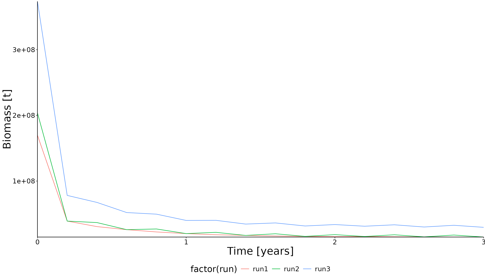
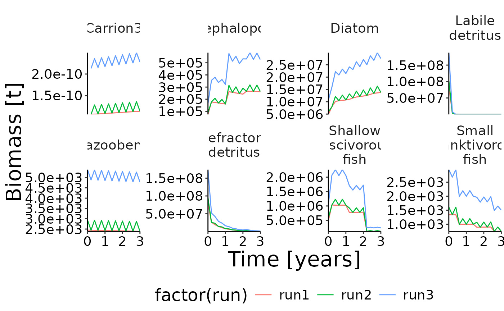
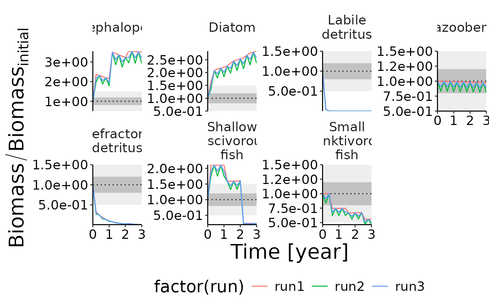
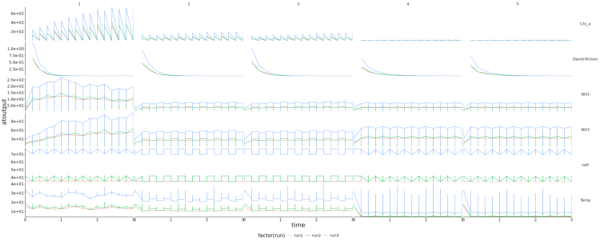

NOTE: This vigentte is optimised for longer simulation runs. Therefore the output is not as pleasant due to the fact that the dummy setas file have a running time of 5 years.
In order to use this vignette make sure to render
model-preprocess.Rmd for each simulation first. Save the
resulting list of dataframes as shown in
data-raw/data-vignette-model-preprocess.R. Of course, you
can also use a personalised version of mode-preprocess.Rmd.
Please make sure to add all resulting dataframes to the list of
dataframes at the end of the preprocess vignette and change
model-comparison.Rmd accordingly.
library("atlantistools")
library("ggplot2")
library("gridExtra")
gen_labels <- list(x = "Time [years]", y = "Biomass [t]")
# You should be able to build the vignette either by clicking on "Knit PDF" in RStudio or with
# rmarkdown::render("model-comparison.Rmd")User Input
This section is used to read in the simulations. In order to demonstrate the vignette, dummy simulations are generated. Please change this accordingly.
result <- preprocess
dummy_setas <- function(list, mult) {
for (i in seq_along(list)) {
if (is.data.frame(list[[i]])) {
mult <- rep_len(mult, length.out = nrow(list[[i]]))
list[[i]][, ncol(list[[i]])] <- list[[i]][, ncol(list[[i]])] * mult
}
}
return(list)
}
store_data <- list(result,
dummy_setas(result, mult = c(1, 1.2)),
dummy_setas(result, mult = c(2, 2.2)))
result <- combine_runs(outs = store_data, runs = c("run1", "run2", "run3"))Whole system biomass
sum_bio <- agg_data(result$biomass, groups = c("time", "run"), fun = sum)
plot <- plot_line(sum_bio, wrap = NULL, col = "run")
update_labels(plot, gen_labels)
Biomass timeseries
plot_line(result$biomass, col = "run", ncol = 4) |> update_labels(gen_labels)
Relative biomass timeseries
df <- convert_relative_initial(result$biomass)
plot <- plot_line(df, col = "run", ncol = 4)
plot <- plot_add_box(plot)
update_labels(plot, labels = list(x = "Time [year]", y = expression(Biomass/Biomass[initial])))
Physics
plot <- plot_line(result$physics, wrap = NULL, col = "run")
custom_grid(plot, grid_x = "polygon", grid_y = "variable")